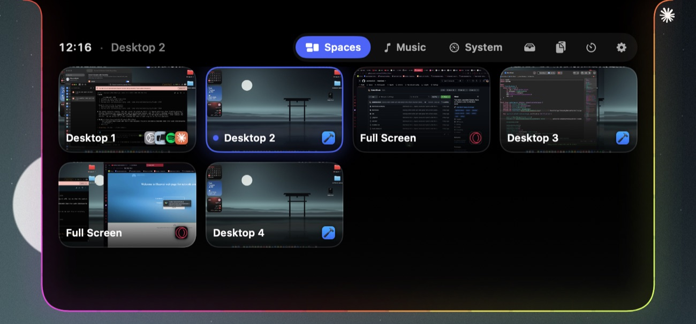
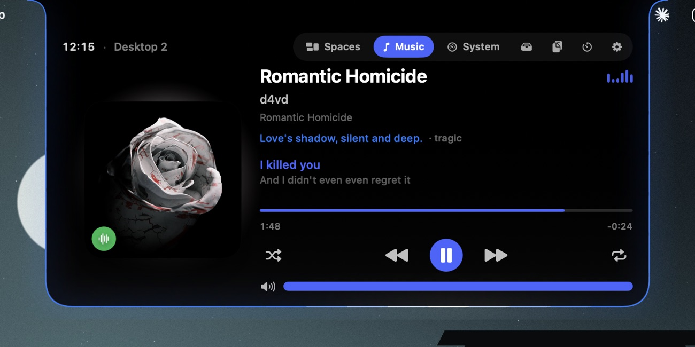
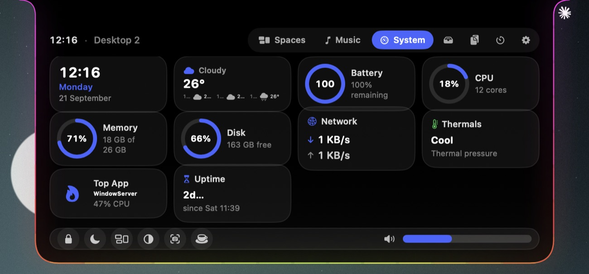
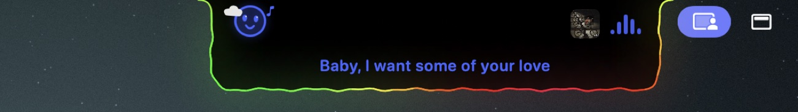
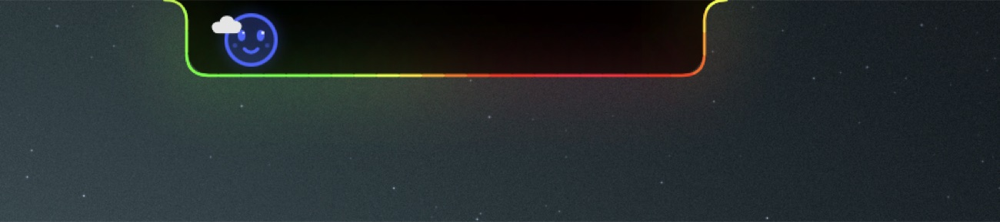
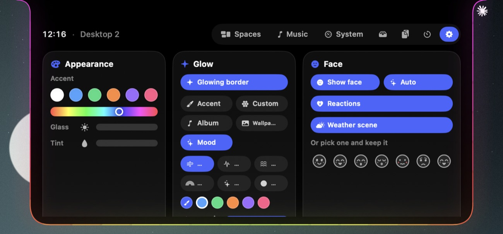
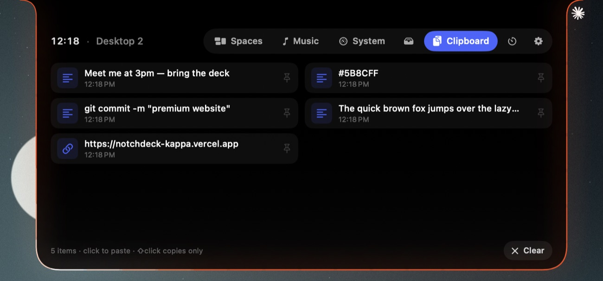
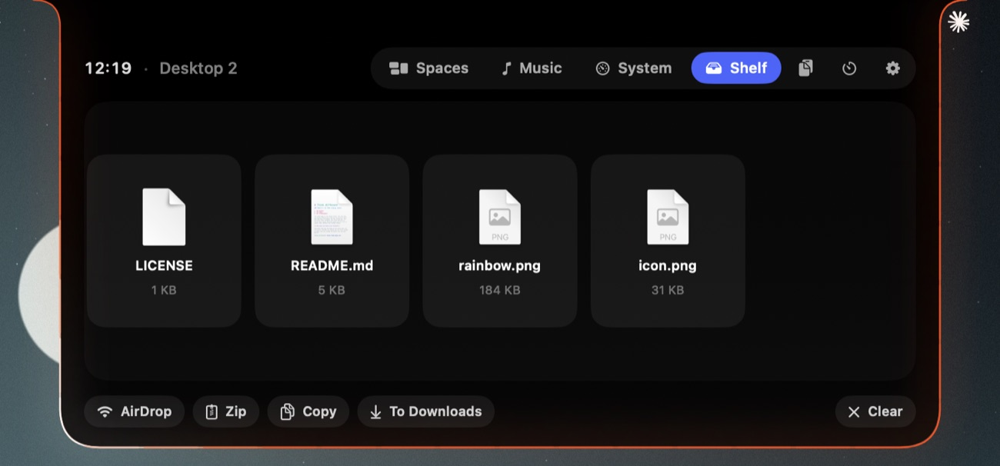
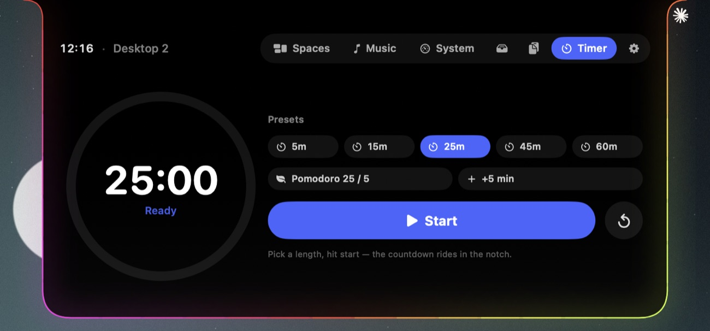

Hover the MacBook notch and it opens into a deck — every desktop with a live preview, your music, your Mac's vitals, weather, clipboard and more. Closed, it wears a glowing border that breathes with whatever you're doing.
This is the real thing, rebuilt in HTML — hover to open, click the cards, play the track, change the accent in ⚙. Esc closes, two-finger swipe changes page.
Spaces, Music and System are the heart of NotchDeck — live, native, and gone again the moment you move your cursor away.
Every desktop and full-screen app on the display, each with a live preview and the icons of what's running there. Click a card and you're there — no sliding through the ones in between.

Artwork, scrubbing, shuffle, repeat and volume — plus live lyrics and an AI-written line about the vibe. While it plays, the closed notch shows the cover and a waveform.

Pick the widgets you care about — clock, weather, battery with time remaining, CPU, memory, disk, network, thermals, the hungriest app, uptime. A dock underneath with lock, sleep, Mission Control, dark mode, screenshot, keep-awake and system volume.

Closed, the notch grows a little face, wears the weather, and glows with a border you can make your own — including a color read from the mood of your music, entirely on your Mac.
NotchDeck asks the on-device model what a track feels like — melancholy, euphoric, menacing — and paints the border, a caption and the face to match. No servers, no account, no data leaving your Mac. Set the glow to Mood and the notch changes color with every song.
“Love's shadow, silent and deep.” — written on-device for Romantic Homicide.

A hand-drawn face lives in the notch and reacts to what's happening — vibing to music, sleepy at night, hot when the Mac runs warm, winking when you take a screenshot, alert when the camera's on.

Live local weather sits in the System page and as a tiny scene beside the face — a sun, drifting clouds, rain or a thunderstorm — read on-device and reconciled against the real sky so it never cries wolf.

The glowing border takes its color from your accent, a custom swatch, the album art, your wallpaper, or the song's mood — and moves the way you like: breathe, pulse, flow, comet, rainbow or solid. When music plays it can wave to the beat.
Plug in and a bright surge is born at the bottom of the border and races out to both sides — a heartbeat of light — while a battery ring fills and the face grins.
A running history of what you've copied — links, snippets, colors, notes. Click to paste it back, ⇧-click to just copy, pin the ones you reuse. It never leaves your Mac.

Drag files onto the notch and park them on the Shelf. Then AirDrop, zip, copy or send them to Downloads — a staging area that follows you across every desktop.

Pick a length or a Pomodoro, hit start, and the countdown lives in the collapsed notch while you work — with the face quietly focused and a ring winding down.

⌃⌥Space opens the deck on the screen your cursor is on, Esc closes it. No mouse needed.
Screens without a notch get a slim virtual one. Each display lists its own desktops and switches independently.
A menu-bar app with no Dock icon. Closed, it's exactly the size of the notch; nothing else on screen changes.
Previews are captured locally and kept in memory. The mood model runs on-device. No accounts, no analytics.
Swift and SwiftUI, ~1 MB download, idle CPU near zero. Timers slow down when the deck is closed.
Free to download, notarized by Apple, MIT-licensed source on GitHub. No sign-up, no trial.
NotchDeck walks you through these on first launch. Each one is optional — the deck works with whatever you grant.
Jumping to a desktop is done the way macOS intends: NotchDeck presses Mission Control's own “Switch to Desktop n” shortcut for you. Sending a keystroke needs the Accessibility permission. Nothing is read from other apps.
The live previews in the Spaces page are screenshots of your desktops, taken on your Mac and kept in memory only. macOS calls this “Screen Recording” even for still captures. Without it you still get cards with the app icons.
Playback control talks to Spotify and Music through AppleScript. macOS asks once, the first time you press play from the deck.
The song-mood color, caption and face use Apple's on-device Foundation Models. It runs entirely on your Mac on supported hardware; when it isn't available, NotchDeck falls back to the album-art color. Nothing is sent anywhere.
Yes. The notch stays available above full-screen apps, and full-screen spaces show up as cards you can jump to directly.
NotchDeck controls Spotify and Apple Music. Browser playback isn't exposed by macOS to third-party apps in a reliable way, so it's not in this release.
Free. Notarized by Apple. Drag it to Applications and hover your notch.
macOS 14 Sonoma or later · Apple silicon & Intel